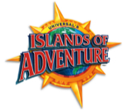

Roteiros dos parques

Islands of Adventure

O Islands of Adventure vem sendo chamado nos últimos anos de “o parque do Harry Potter”, afinal é neste parque que a Universal transportou o mundo do bruxo conhecido dos livros e cinema para todo mundo se divertir. No entanto, existe muito mais além de Harry Potter neste parque, que pode ser considerado um dos mais radicais da cidade de Orlando.
– Clique aqui para abrir o mapa do parque enquanto lê o roteiro.
– Se quiser fazer o download deste roteiro para imprimir depois, clique aqui.
Algumas dicas gerais do Islands of Adventure
- Corra para o Harry Potter, depois faça o restante do parque
Como já é sabido, desde meados de 2010 a área dedicada ao Harry Potter é o hit deste parque, ou seja, não importa o horário que você chegar, corra para esse canto. A fila do “Harry Potter and the Forbidden Journey”, que é a atração que fica dentro do castelo, tem quase sempre pelo menos 1 hora de espera – e a fila vai crescendo ao longo do dia. O lado bom é que a fila por si só já é uma atração para os fãs de Harry Potter, pois você faz um tour por todo o castelo até chegar na atração. De qualquer maneira, sua melhor chance de não perder muito tempo esperando esta atração é ir o mais cedo possível.
- Quantidade de dias
Como falei no roteiro do Universal Studios, a febre Harry Potter que se instalou na cidade esse ano está causando um aumento nas filas em geral. Dá pra fazer os dois parques no mesmo dia? Sim, é possível, mas com restrições. Repito o que sugeri no roteiro da Universal:
- 1 parque por dia: nós recomendamos essa opção para quem vai na alta temporada dos EUA e pretende curtir muito cada parque. É ideal também pra quem tem uma viagem mais folgada com bastante tempo para conhecer tudo.
- 2 parques em um dia com Universal Express: recomendado pra quem vai na alta ou na baixa temporada, quer curtir tudo, mas tem pouco tempo para ir a um parque por dia. Com o Universal Express (clique aqui para saber mais sobre ele), você não pode furar a fila nas duas principais atrações do Harry Potter, mas consegue cortar fila em todos os outros brinquedos. Assim você perde bastante tempo nas do Harry Potter, mas consegue completar o resto das atrações bem mais rapidamente.
- 2 parques em um dia sem Universal Express: recomendado somente para quem vai em baixa temporada (os dias “verdes” nesse calendário), tem pouco tempo e quer somente curtir as atrações “imperdíveis” dos nossos roteiros.
- Evite filas indo sozinho
Ao contrário dos parques da Disney que disponibilizam essa opção em pouquíssimos lugares, nos parques da Universal são muitas as atrações com fila para “single riders”. Isso significa que se você não se importar em sentar com alguém desconhecido dentro de uma atração, você pode entrar nessa fila especial e reduzir para quase nada o tempo de espera. Vale a pena!
- Fique ligado nas filas pelo celular
Agora a Universal também oferece wi-fi gratuito em seus parques, então recomendo baixar o app oficial para que você possa ir acompanhando o tamanho das filas de todas as atrações ao longo do dia. O aplicativo está disponível para dispositivos iOS e Android.
ROTEIRO DO ISLANDS OF ADVENTURE
1. CHEGANDO NO ISLANDS OF ADVENTURE
Ao cruzar o CityWalk, o Islands of Adventure é o parque que fica a esquerda, mas não vai ser difícil de encontrar se você prestar atenção nas placas pelo caminho.
Com o efeito “Harry Potter”, sempre recomendo chegar na Islands um pouco antes dela abrir. É impressionante como, quando eles abrem os portões e você corre para o castelo, já encontra uma fila de 40 minutos (provavelmente formado pelas pessoas que estão hospedadas nos hotéis da Universal e podem entrar 1 hora antes de todos no parque)!
Assim como nos outros parques, faça o movimento anti-horário e caminha à direita assim que passar pelos portões e chegar no lago principal. Vá junto com a multidão para a área do bruxo.
2. THE WIZARDING WORLD OF HARRY POTTER – HOGSMEADE
Essa área caracteriza o vilarejo Hogsmeade, dos livros e filmes do Harry Potter. São 5 atrações, sendo que a principal é a que se passa dentro do castelo de Hogwarts. Vamos a elas.
 IMPERDÍVEIS
IMPERDÍVEIS
- Harry Potter and the Forbidden Journey: a emblemática viagem pela história do Harry Potter é uma das mais impressionantes atrações que eu já fui. Mesmo que você não goste ou conheça a história, vale a pena pelo conjunto de efeitos especiais.
– Dragon Challenge: essas montanhas russas não são exatamente uma novidade, pois já existem desde que o parque abriu, mas foram reformadas para se adaptarem a temática do Torneio Tribruxo (4 livro/filme da série). Vá para a fila da montanha russa vermelha se você procura uma emoção extra – mas não ache que a azul não é radical também.
– Hogwarts Express: o trem que liga a vila de Hogsmeade, no Islands of Adventure ao Beco Diagonal no Universal Studios. Mais detalhes sobre ele no roteiro da Universal. E para entrar, o seu ingresso tem que ser “park-to-park”.
 PARA AS CRIANÇAS
PARA AS CRIANÇAS
– Flight of the Hippogriff: uma montanha russa bem leve para a família toda se divertir, inclusive levando os pequenos.
 NÃO PERCA SEU TEMPO
NÃO PERCA SEU TEMPO
– Frog Choir
– Triwizard Spirit Rally
 TIRE FOTOS
TIRE FOTOS
Tirar fotos no cenário: verdade seja dita, a Universal caprichou na criação desta área do parque. Como fã de Harry Potter, recomendo tirarem muitas fotos aqui.
 FOOD TIP
FOOD TIP
Experimente a famosa Butter Beer, a cerveja amanteigada: essa dica é só para os fãs de Harry Potter mesmo. Se você gosta dos livros, aposto que já teve curiosidade de saber qual o gosto da famosa cerveja amanteigada. Bom, para dizer a verdade, eu achei muito doce para o meu gosto, mas você pode matar a sua curiosidade e tirar suas próprias conclusões.
 DICAS DE COMPRAS
DICAS DE COMPRAS
Visite as lojas de doces que fica em frente a entrada da montanha russa. Lá você encontra muitos doces diferentes presentes nos filmes. É possível ainda comprar varinhas, vassouras e todos os produtos típicos de Harry Potter.
3. JURASSIC PARK
 IMPERDÍVEL
IMPERDÍVEL
– Jurassic Park River Adventure: essa atração é muito legal, mas só recomendo nos dias de calor porque molha bastante. Além de molhar, ela também é uma retratação muito bem feita do filme Jurassic Park.
 SE SOBRAR TEMPO
SE SOBRAR TEMPO
– Jurassic Park Discovery Center
 PARA AS CRIANÇAS
PARA AS CRIANÇAS
– Pteranodon Flyers: um voo muito divertido que não tem como uma criança ou um adulto (eu!) não amar.
– Camp Jurassic: que criança que não gosta de um “parquinho” né? E aqui completamente tematizado com Dinossauros. Para um jovem cientista que um dia eu fui, isso aqui seria o paraíso.
4. TOON LAGOON
 IMPERDÍVEIS
IMPERDÍVEIS
– Dudley Do-Right’s Ripsaw Falls: ainda mais do que recomendado no Jurassic Park, a dica para essa montanha russa na água é somente ir nos dias de extremo calor. Ela molha absolutamente tudo!! Se prepare para sair ensopado de lá e não seja doido de ir em dias mais frios.
– Popeye & Bluto’s Bilge-Rat Barges: a mesma recomendação da atração acima vale aqui também. Fuja daí se estiver indo no frio. A impressão que eu tenho é que a Universal é bem sem noção no que se refere a atrações de molhar. Elas sempre molham DEMAIS.
 PARA AS CRIANÇAS
PARA AS CRIANÇAS
– Me Ship, The Olive: outro playground, agora um pouco mais molhado que o anterior.
5. MARVEL SUPER HERO ISLAND
 IMPERDÍVEIS
IMPERDÍVEIS
– The Amazing Adventures of Spider-Man: esse simulador do Homem Aranha é impressionante. Os efeitos especiais são tão bons, que tem hora que você perde um pouco a noção e se pergunta se está em um filme ou se aquilo é de verdade. Um dos meus preferidos do parque.
– The Incredible Hulk Coaster: essa é também uma das melhores montanhas russas de Orlando. Super rápida e da mais medo de olhar do que de ir propriamente. Se você topa um pouquinho de emoção, e não se assusta com os loopings, não deixe de ir.
 SE SOBRAR TEMPO
SE SOBRAR TEMPO
– Doctor Doom’s Fearfall: não se compara com o elevador do finado Playcenter em São Paulo. Acho bem mais ou menos. É bem decepcionante, porque ele não tem uma queda rápida. Você sobe rápido e desce devagar. Eu acho que devia ser o oposto, mas quem sou eu, né?
 NÃO RECOMENDO
NÃO RECOMENDO
– Storm Force Accelatron
Em geral, depois de acabar a área da Marvel, mais ou menos no meio do dia, eu saio em direção ao outro parque para passar o resto da tarde e como por lá mesmo. Mas se quiser continuar no Islands, ainda existem outras duas áreas.
6. SEUSS LANDING
 PARA AS CRIANÇAS
PARA AS CRIANÇAS
– The Cat in the Hat: atração do tipo “trenzinho” que caminha por toda a história do livro The Cat In The Hat.
– The High In The Sky Seuss Trolley Train Ride: outro trenzinho que passa por cima de toda a Seuss Landing.
– One Fish, Two Fish, Red Fish, Blue Fish: atração daquelas que “gira” como o Dumbo do Magic Kingdom.
 SE SOBRAR TEMPO
SE SOBRAR TEMPO
- If I Ran the Zoo: parquinho com muita água para as crianças se refrescarem no verão.
– Caro-Seuss-el: carrossel com os personagens da área.
7. THE LOST CONTINENT
 SE SOBRAR TEMPO
SE SOBRAR TEMPO
– The Eighth Voyage of Sindbad Stunt Show: apresentação com dubles bem similar a do Indiana Jones que é exibida no Hollywood Studios da Disney.
 NÃO RECOMENDO
NÃO RECOMENDO
– Poseidon’s Fury: é um show meio sem pé nem cabeça. Você entra em diversas salas e um ator fica interagindo com projeções e esguichos de água. O espaço é muito legal mas na minha opinião, é uma atração mal executada.
 FOOD TIP
FOOD TIP
Fica nessa área meio abandonada do parque, o eleito por muitos anos como o melhor restaurante de parque temático do mundo, o Mythos’s. Ele é muito completo e oferece diversas opções de comida de verdade por preços bem interessantes. Vale a pena para um almoço ou um jantar no fim do dia.